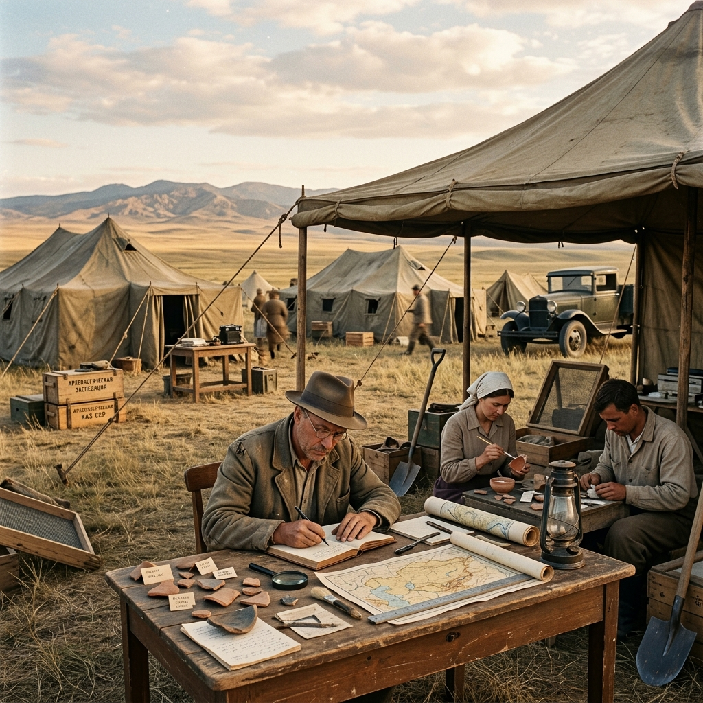
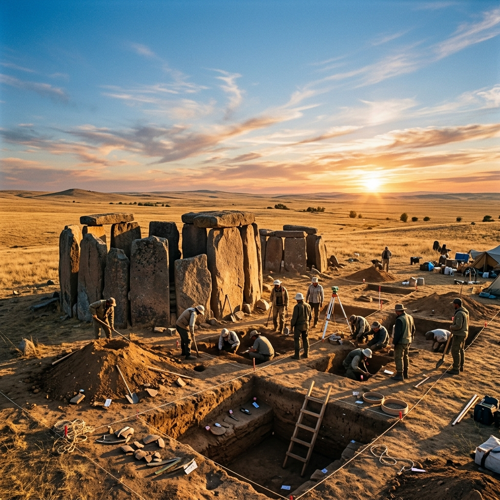

Қазақстан археология ғылымының негізін қалаушы, көрнекті ғалым, академик, этнограф және филолог.
Әлкей Хақанұлы Марғұлан — қазақ мәдениеті мен тарихын зерттеуде өлшеусіз із қалдырған әмбебап ғұлама ғалым.
Ол Баянауылдың баурайында дүниеге келіп, жастайынан халықтық фольклор мен дастан-жырларды бойына сіңіріп өсті. Семей педтехникумын бітірген соң, Ленинград мемлекеттік университетінің шығыстану факультетінде білімін шыңдап, Түркітану және өнертану салаларын терең зерттеді.
Марғұлан ғылыми қызметін филология мен әдебиеттен бастап, кейіннен Қазақстанның бай тарихы мен археологиясына біржола бет бұрды. Оның жетекшілігімен өткен археологиялық қазба жұмыстары қазақ даласында орта ғасырлық және қола дәуіріндегі өркениеттердің гүлденгенін әлемге паш етті.
Қола дәуіріне жататын бірегей көшпенділер мәдениетін ашып, жан-жақты зерттеді. Бұл зерттеу қазақ жерінде ежелден кен өндіру мен металлургияның дамығанын дәлелдеді.
Зерттеуді көруШоқан Уәлихановтың ғылыми мұрасын жинақтап, академиялық басылымын шығарды. Қазақтың «Манас», «Қозы Көрпеш - Баян Сұлу» дастандарын тарихи-әдеби тұрғыдан талдады.
Зерттеуді көруЕжелгі көшпенділердің сәулет өнері, бейнелеу өнері мен қолөнер бұйымдарын зерттеді. Қазақ ою-өрнектерінің символикалық мәнін ашқан іргелі еңбектер жазды.
Зерттеуді көру
Әлкей Марғұлан жетекшілік еткен атақты Орталық Қазақстан археологиялық экспедициясы Сарыарқа даласындағы ежелгі өркениеттер ошақтарын жүйелі түрде зерттеді. Бұл қазба жұмыстары далалық мәдениеттің ежелгі дәуірін қайта жаңғыртты.

Қола және ерте темір дәуіріне жататын қоныстар мен обаларды кең көлемде зерттеу жұмыстары басталды.
Ортағасырлық Басқамыр және Аяққамыр қалашықтарының сәулеттік құрылымдары мен суару жүйелері анықталды.
Далалық билеушілер мен қолбасшыларға арналған алып тас мазарлардың құрылысы мен жерлеу дәстүрлері сипатталды.
Тарих, филология және өнертану салаларында жарық көрген еңбектер
Қазақстанның әр өңірінде жүргізілген далалық археологиялық зерттеулер
Қазақстандық кәсіби археологтар мен тарихшылардың тұтас буынын дайындады
Қазақ мәдениеті, ежелгі сәулет өнері және эпикалық жырлар бойынша басылымдар
Қазақ КСР Ғылым академиясын ашуға белсене қатысып, оның академик-хатшысы болып сайланды.
«Орталық Қазақстанның ежелгі мәдениеті» атты іргелі еңбегі үшін мемлекеттік марапатқа ие болды.
Ғылыми қызметіндегі жоғары жетістіктері мен отандық ғылымды дамытудағы зор еңбегі үшін Социалистік Еңбек Ері атағы берілді.